Code
# Imports
import numpy as np
import pandas as pd
import matplotlib.pyplot as plt⬅️ Previous Session | 🏠 Course Home

There are extensive options for plotting in Python – some favorites include statistical visualizations in Seaborn and interactive plots for web applications in Bokeh. The original and fundamental library for visualizations in Python, however, is matplotlib.
Matplotlib was the first plotting library developed for Python and remains the most widely used library for data visualization in the Python community. Designed to resemble graphics in MATLAB, matplotlib is reminiscent of MATLAB in both appearance and functionality. As a result, it is not the easiest library to work with, and deviates from the object-oriented syntax we are familiar with in Python.
This session will serve as an introduction to plotting in Python using matplotlib. The nature of matplotlib – and figure-making in general – is such that the easiest way to learn is by following examples. As such, this session is structured a bit differently than the others, so be sure to look carefully at the coded examples. Finally, the best way to learn advanced functions and find help with matplotlib is by exploring the examples in the gallery.
Session Topicsplt.plot()
plt.scatter()
We will work through this notebook together. To run a cell, click on the cell and press “Shift” + “Enter” or click the “Run” button in the toolbar at the top.
🐍 This symbol designates an important note about Python structure, syntax, or another quirk.
▶️ This symbol designates a cell with code to be run.
✏️ This symbol designates a partially coded cell with an example.

As always, we will begin by importing the required libraries and packages. For plotting, itself, we will use a module of the matplotlib library called pyplot. The pyplot module consists of a collection of functions to display and edit figures. As you advance with Python and with data analysis, you may want to explore additional features of matplotlib, but pyplot will suit the vast majority of your plotting needs at this stage.
The standard import statement for matplotlib.pyplot is:
import matplotlib.pyplot as plt▶️ <b> Run the cell below. </b># Imports
import numpy as np
import pandas as pd
import matplotlib.pyplot as pltThe core components of a matplotlib plot are the Figure and the Axes. The Figure is the overall window upon which all components are drawn. It serves as the blank container for plots, as well as other things, such as a legend, color bar, etc. You can (and will) create multiple independent figures, and each figure can hold multiple Axes. To the figure you will add Axes, the area where the data are actually plotted and where associated ticks, labels, etc. live.
When working with a single plot, we will mostly deal with the Figure object and its routines, but we will see the Axes become important as we increase the complexity of our plots.

We will start with the most basic plotting routines: plt.plot() and plt.scatter(). The first, plt.plot(), is used to generate a connected line plot (with optional markers for individual data points). plt.scatter(), as the name suggests, is used to generate a scatter plot.
Each time you want to create a new figure, it is wise to first initialize a new instance of the matplotlib.figure.Figure class on which to plot our data. While this is not required to display the plot, if you subsequently plot additional data without a new Figure instance, all data will be plotted on the same figure. For example, let’s generate a few functions, y_{\sin} = \sin{(x)} and y_{\cos} = \cos{(x)}:
# Generate a 1D array with 300 points between -5 and 5
x = np.linspace(-5,5,300)
# Generate sine wave
ysin = np.sin(x)
# Generate cosine wave
ycos = np.cos(x)We can plot these on the same figure without instancing plt.figure() as follows:
# Plot sine wave
plt.plot(x,ysin)
# Plot cosine wave
plt.plot(x,ycos)▶️ <b> Run the cell below. </b># Generate a 1D array with 100 points between -5 and 5
x = np.linspace(-5,5,100)
# Generate sine wave
ysin = np.sin(x)
# Generate cosine wave
ycos = np.cos(x)
# Plot sine wave
plt.plot(x,ysin)
# Plot cosine wave
plt.plot(x,ycos)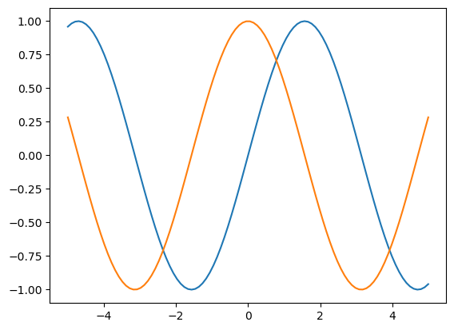
To create multiple graphs in separate figure windows, however, you need to create new Figure instances as follows:
fig = plt.figure()▶️ <b> Run the cell below. </b># Plot sine wave
fig1 = plt.figure()
plt.plot(x,ysin)
# Plot cosine wave
fig2 = plt.figure()
plt.plot(x,ycos)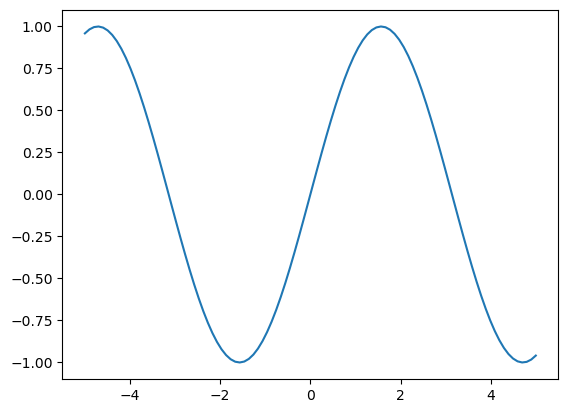
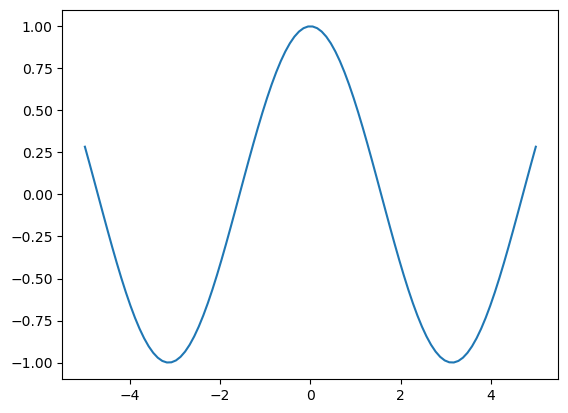
This also allows you to access the Figure object later by refering to the variable fig. Thus, even when you want to plot all data on a single plot, it is best to always start by initializing a new Figure.
To generate a scatter plot instead of a line, we can use plt.scatter():
# Generate new x and y with fewer points for legibility
xscat = np.linspace(-5,5,25)
yscat = np.sin(xscat)
# Plot sine function as scatter plot
plt.scatter(xscat,yscat)▶️ <b> Run the cell below. </b># Generate new x and y with fewer points for legibility
xscat = np.linspace(-5,5,25)
yscat = np.sin(xscat)
# Plot sine function as scatter plot
plt.scatter(xscat,yscat)<matplotlib.collections.PathCollection at 0x17a67dbd0>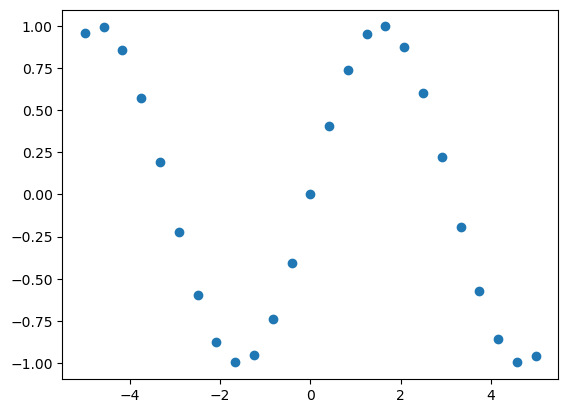
You can also create a scatter plot using plt.plot() with keyword arguments, which allow you to change things like the color, style, and size of the lines and markers. We will explore some of these keyword arguments in the next section.
In addition to the required x and y parameters, there are a number of optional keyword arguments that can be passed to the matplotlib plotting functions. Here, we will consider a few of the most useful: color, marker, and linestyle.
The first thing you might wish to control is the color of your plot. Matplotlib accepts several different color definitions to the color keyword argument, which is a feature of most plotting functions.
First, colors can be passed as strings according to their HTML/CSS names. For example:
plt.plot(x, y, 'green')In total, there are 140 colors allowed in HTML; their names are shown below.

As you can see in the image above, the basic colors can also be defined by a single-letter shortcut. These are shown in the table below.
| Letter code | Color name |
|---|---|
| ‘r’ | red |
| ‘g’ | green |
| ‘b’ | blue |
| ‘c’ | cyan |
| ‘m’ | magenta |
| ‘y’ | yellow |
| ‘k’ | black |
| ‘w’ | white |
Another way of specifying colors is to use an RGB(A) tuple, where the brightness of each channel (R, G, or B, which correspond to red, green, and blue) is given as a float between 0 and 1. An optional fourth value, A or alpha, value can be passed to specify the opacity of the line or marker.
plt.plot(x, y, color=(0.2,0.7,1.0))A grayscale value can be used by passing a number between 0 and 1 as a string. In this representation, '0.0' corresponds to black and '1.0' corresponds to white.
plt.plot(x, y, color='0.25')My personal favorite way to define colors is to use color hex codes, which represent colors as hexadecimals ranging from 0 to FF. Color hex codes consist of a hash character # followed by six hex values (e.g. #AFD645). Hex codes must be passed as strings (e.g. '#AFD645') in matplotlib and are perhaps the most flexible way to select colors.
plt.plot(x, y, color='#C6E2FF')In the cell below, five functions are plotted in different colors, each specified by a different definition.
▶️ <b> Run the cell below. </b># Initialize empty figure
fig1 = plt.figure()
# Plot sine wave with different colors
plt.plot(x, np.sin(x - 0), color='darkblue') # HTML name
plt.plot(x, np.sin(x - 1), color='m') # Short letter code
plt.plot(x, np.sin(x - 2), color=(0.0,0.8,0.81)) # RGB tuple
plt.plot(x, np.sin(x - 3), color='0.65') # Grayscale between 0 and 1
plt.plot(x, np.sin(x - 4), color='#B8D62E') # Hex code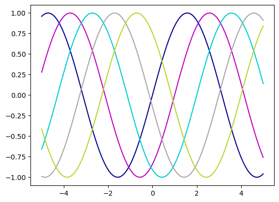
Using the linestyle keyword argument, you can change the style of the line plotted using plt.plot(). These can be specified either by their name or a shortcut. A few of the style options (and their matplotlib shortcuts) are shown in the table below. To see a full list of linestyle options, see the docs.
| Short code | Line style |
|---|---|
| ‘-’ | solid |
| ‘–’ | dashed |
| ‘:’ | dotted |
| ‘-.’ | dashdot |
As we’ve already seen, the default linestyle is solid. The syntax for changing a line’s style is:
plt.plot(x, y, linestyle='dashed')or, more commonly:
plt.plot(x, y, linestyle='--')Let’s adjust the style of our waveform plot using the linestyle keyword argument.
▶️ <b> Run the cell below. </b># Initialize empty figure
fig1 = plt.figure()
# Plot sine wave with different colors + linestyles
plt.plot(x, np.sin(x - 0), color='darkblue', linestyle='-')
plt.plot(x, np.sin(x - 1), color='m', linestyle='dashed')
plt.plot(x, np.sin(x - 2), color=(0.0,0.8,0.81), linestyle=':')
plt.plot(x, np.sin(x - 3), color='0.65', linestyle='solid')
plt.plot(x, np.sin(x - 4), color='#B8D62E', linestyle='-.')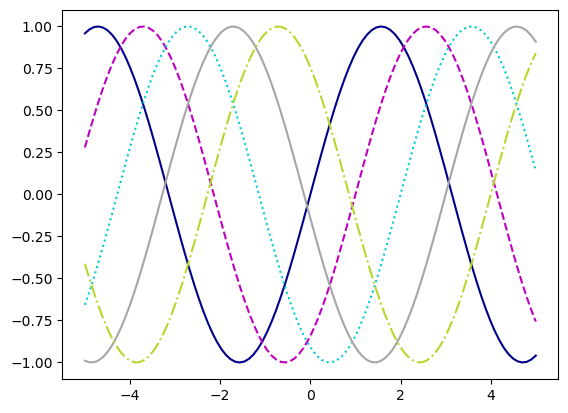
Markers can be used in plt.plot() and plt.scatter(). There are several available markers in matplotlib, and you can also define your own. A few of the most useful are shown in the table below.
| Marker code | Symbol | Description |
|---|---|---|
| ‘o’ | ● | circle |
| ‘.’ | ⋅ | point |
| **’*’** | ★ | star |
| ‘+’ | + | plus |
| ‘x’ | \times | x |
| ‘^’ | ▲ | triangle |
| ‘s’ | ◼ | square |
Note that unlike color and linestyle, the marker keyword argument only accepts a code to specify the marker style.
plt.scatter(x, y, marker='+')▶️ <b> Run the cell below. </b># Initialize empty figure
fig1 = plt.figure()
# Plot sine wave as scatter plot with different colors + markers
plt.scatter(xscat, yscat-0, color='darkblue', marker='o')
plt.scatter(xscat, yscat-1, color='m', marker='.')
plt.scatter(xscat, yscat-2, color=(0.0,0.8,0.81), marker='+')
plt.scatter(xscat, yscat-3, color='0.65', marker='*')
plt.scatter(xscat, yscat-4, color='#B8D62E', marker='s')<matplotlib.collections.PathCollection at 0x17a827fd0>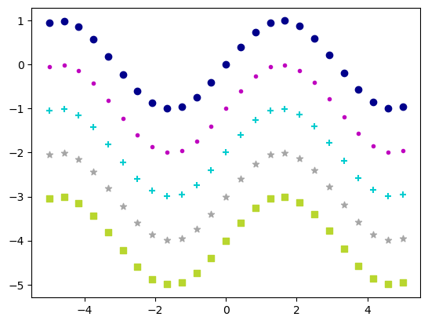
Using the marker keyword argument with the plt.plot() function creates a connected line plot, where the data points are designated by markers and connected by lines.
▶️ <b> Run the cell below. </b># Initialize empty figure
fig1 = plt.figure()
# Plot sine wave with different colors + markers
plt.plot(xscat, np.sin(xscat - 0), color='darkblue', marker='o')
plt.plot(xscat, np.sin(xscat - 1), color='m', marker='.')
plt.plot(xscat, np.sin(xscat - 2), color=(0.0,0.8,0.81), marker='+')
plt.plot(xscat, np.sin(xscat - 3), color='0.65', marker='*')
plt.plot(xscat, np.sin(xscat - 4), color='#B8D62E', marker='s')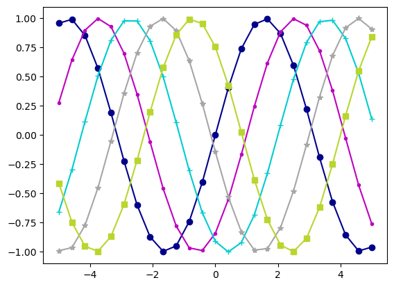
Up to now, we have used explicit definitions to specify keyword arguments. While this is generally preferable, matplotlib does allow color, linestyle, and marker codes to be combined into a single, non-keyword argument. For example:
# Plot a dashed red line
plt.plot(x, y, 'r--')Several examples are presented in the cell below.
▶️ <b> Run the cell below. </b># Initialize empty figure
fig1 = plt.figure()
# Plot sine wave with different colors + markers
plt.plot(xscat, yscat-0, 'b-o') # Solid blue line with circle markers
plt.plot(xscat, yscat-1, 'm--*') # Dashed magenta line with star markers
plt.plot(xscat, yscat-2, 'c+') # Cyan plus markers
plt.plot(xscat, yscat-3, 'k') # Solid black line
plt.plot(xscat, yscat-4, 'y-s') # Solid yellow line with square markers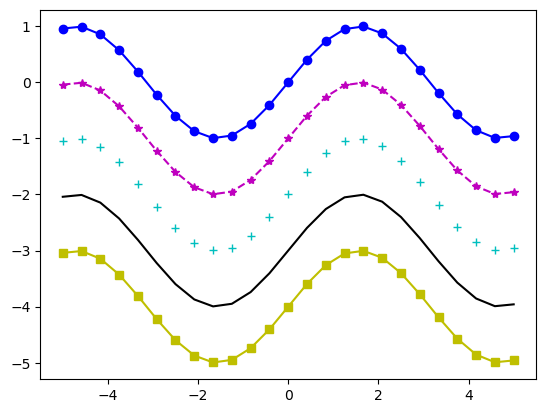
As you can see, the downside of this method is that you are limited to the eight colors that have a single-letter code. To use other colors, you must use explicitly defined keyword arguments.
In addition to those we explored in this section, other useful keyword arguments include linewidth and markersize, which do exactly what you’d expect them to do. For a full list of keyword arguments (you should know what’s coming by now), see the docs.
Next, we will explore how to scale and annotate a plot using axes routines that control what goes on around the edges of the plot.
By default, matplotlib will attempt to determine x- and y-axis limits, which usually work pretty well. Sometimes, however, it is useful to have finer control. The simplest way to adjust the display limits is to use the plt.xlim() and plt.ylim() methods:
# Set axis limits
plt.xlim(xmin, xmax)
plt.ylim(ymin, ymax)In the example below, adjust the numbers (these can be int or float values) to see how the plot changes.
▶️ <b> Run the cell below. </b># Initialize empty figure
fig1 = plt.figure()
# Plot sine wave
plt.plot(x, ysin, color='darkblue')
# Set axis limits
plt.xlim(-5,5)
plt.ylim(-2,2)(-2.0, 2.0)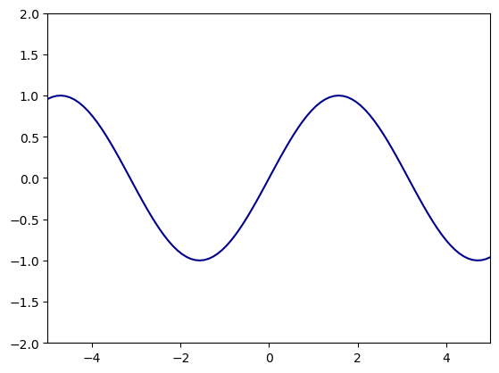
You may also find it useful to adjust the ticks and/or tick labels that matplotlib displays by default. The plt.xticks() and plt.yticks() methods allow you to control the locations of both the ticks and the labels on the x- and y-axes, respectively. Both methods accept two list or array-like arguments, as well as optional keyword arguments. The first corresponds to the ticks, while the second controls the tick labels.
# Set x-axis ticks at 0, 0.25, 0.5, 0.75, 1.0 with all labeled
plt.xticks([0,0.25,0.5,0.75,1.0])
# Set y-axis ticks from 0 to 100 with ticks on 10s and labels on 20s
plt.yticks(np.arange(0,101,10),['0','','20','','40','','60','','80','','100'])If the labels are not specified, all ticks will be labeled accordingly. To only label certain ticks, you must pass a list with empty strings in the location of the ticks you wish to leave unlabeled (or the ticks will be labeled in order).
▶️ <b> Run the cell below. </b># Initialize empty figure
fig1 = plt.figure()
# Plot sine wave
plt.plot(x, ysin, color='darkblue')
# Set x-axis limits
plt.xlim(-5,5)
# Set axis ticks
plt.xticks([-4,-3,-2,-1,0,1,2,3,4],['-4','','-2','','0','','2','','4'])
plt.yticks([-1,-0.5,0,0.5,1])([<matplotlib.axis.YTick at 0x17aa243a0>,
<matplotlib.axis.YTick at 0x17aa0fd00>,
<matplotlib.axis.YTick at 0x17a9f0ca0>,
<matplotlib.axis.YTick at 0x17a9cf6d0>,
<matplotlib.axis.YTick at 0x17a9f0400>],
[Text(0, -1.0, '−1.0'),
Text(0, -0.5, '−0.5'),
Text(0, 0.0, '0.0'),
Text(0, 0.5, '0.5'),
Text(0, 1.0, '1.0')])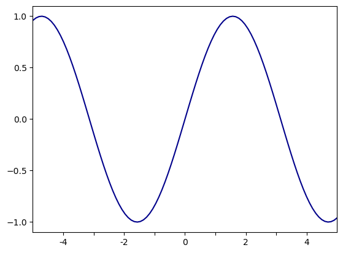
As with any plot, it is imperative to include x- and y-axis labels. This can be done by passing strings to the plt.xlabel() and plt.ylabel() methods:
# Set axis labels
plt.xlabel('x-axis')
plt.ylabel('y-axis')▶️ <b> Run the cell below. </b># Initialize empty figure
fig1 = plt.figure()
# Plot sine wave
plt.plot(x, ysin, color='darkblue')
# Set x-axis limits
plt.xlim(-5,5)
# Set axis ticks
plt.xticks([-4,-3,-2,-1,0,1,2,3,4],['-4','','-2','','0','','2','','4'])
plt.yticks([-1,-0.5,0,0.5,1])
# Set axis labels
plt.xlabel('x-axis')
plt.ylabel('y-axis')Text(0, 0.5, 'y-axis')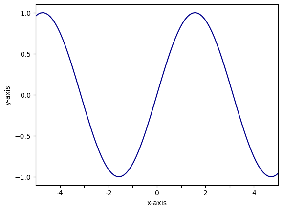
A nice feature about matplotlib is that it supports TeX formatting for mathematical expressions. This is quite useful for displaying equations, exponents, units, and other mathematical operators. The syntax for TeX expressions is 'r$TeX expression here$'. For example, we can display the axis labels as x and \sin{(x)} as follows:
▶️ <b> Run the cell below. </b># Initialize empty figure
fig1 = plt.figure()
# Plot sine wave
plt.plot(x, ysin, color='darkblue')
# Set x-axis limits
plt.xlim(-5,5)
# Set axis ticks
plt.xticks([-4,-3,-2,-1,0,1,2,3,4],['-4','','-2','','0','','2','','4'])
plt.yticks([-1,-0.5,0,0.5,1])
# Set axis labels
plt.xlabel(r'$x$')
plt.ylabel(r'$\sin{(x)}$')Text(0, 0.5, '$\\sin{(x)}$')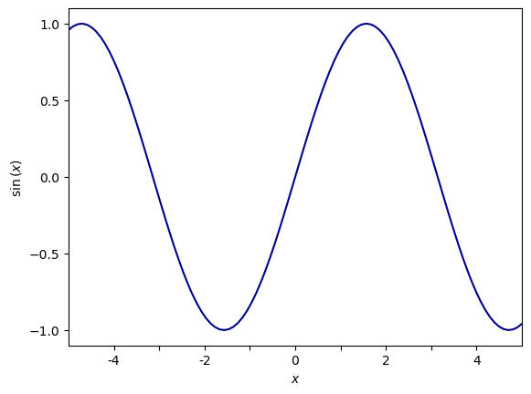
Adding a title to your plot is analogous to labeling the x- and y-axes. The plt.title() method allows you to set the title of your plot by passing a string:
plt.title('Title')▶️ <b> Run the cell below. </b># Initialize empty figure
fig1 = plt.figure()
# Plot sine wave
plt.plot(x, ysin, color='darkblue')
plt.plot(x, ycos, color='#B8D62E')
# Set x-axis limits
plt.xlim(-5,5)
# Set axis ticks
plt.xticks([-4,-3,-2,-1,0,1,2,3,4],['-4','','-2','','0','','2','','4'])
plt.yticks([-1,-0.5,0,0.5,1])
# Set axis labels
plt.xlabel(r'$x$')
plt.ylabel(r'$y$')
# Set title
plt.title('Sinusoidal functions')Text(0.5, 1.0, 'Sinusoidal functions')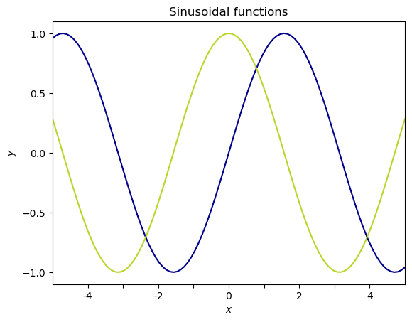
When multiple datasets are plotted on the same axes it is often useful to include a legend that labels each line or set of points. Matplotlib has a quick way of displaying a legend using the plt.legend() method. There are multiple ways of specifying the label for each dataset; I prefer to pass a list of strings to plt.legend():
# Plot data
plt.plot(x1, y1)
plt.plot(x2, y2)
# Legend
plt.legend(labels=['Data1', 'Data2'])▶️ <b> Run the cell below. </b># Initialize empty figure
fig1 = plt.figure()
# Plot sine wave
plt.plot(x, ysin, color='darkblue')
plt.plot(x, ycos, color='#B8D62E')
# Set x-axis limits
plt.xlim(-5,5)
# Set axis ticks
plt.xticks([-4,-3,-2,-1,0,1,2,3,4],['-4','','-2','','0','','2','','4'])
plt.yticks([-1,-0.5,0,0.5,1])
# Set axis labels
plt.xlabel(r'$x$')
plt.ylabel(r'$y$')
# Set title
plt.title('Sinusoidal functions')
# Legend
plt.legend(labels=['sin(x)','cos(x)'])<matplotlib.legend.Legend at 0x17a7c0e50>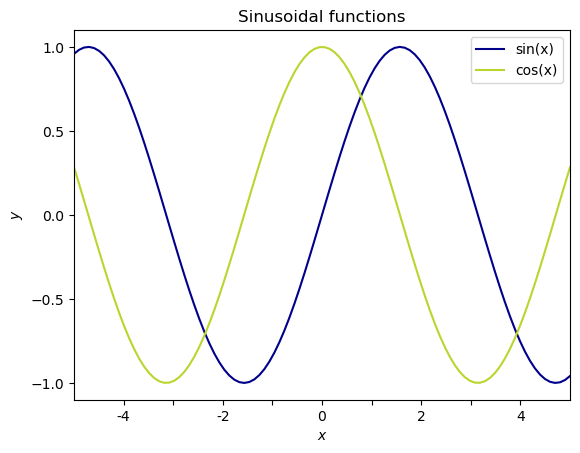
Another way of setting the data labels is to use the label keyword argument in the plt.plot() (or plt.scatter()) function:
# Plot data
plt.plot(x1, y1, label='Data1')
plt.plot(x2, y2, label='Data2')
# Legend
plt.legend()Note that you must still run plt.legend() to display the legend.
▶️ <b> Run the cell below. </b># Initialize empty figure
fig1 = plt.figure()
# Plot sine wave
plt.plot(x, ysin, label='sin(x)', color='darkblue')
plt.plot(x, ycos, label='cos(x)', color='#B8D62E')
# Set x-axis limits
plt.xlim(-5,5)
# Set axis ticks
plt.xticks([-4,-3,-2,-1,0,1,2,3,4],['-4','','-2','','0','','2','','4'])
plt.yticks([-1,-0.5,0,0.5,1])
# Set axis labels
plt.xlabel(r'$x$')
plt.ylabel(r'$y$')
# Set title
plt.title('Sinusoidal functions')
# Legend
plt.legend()<matplotlib.legend.Legend at 0x17a5db520>
Now that we’ve established the basics of plotting in matplotlib, let’s get a bit more complicated. Oftentimes, you may want to plot data on multiple axes within the same figure. The easiest way to do this in matplotlib is to use the plt.subplot() function, which takes three non-keyword arguments: nrows, ncols, and index. nrows and ncols correspond to the total number of rows and columns of the entire figure, while index refers to the index position of the current axes. Importantly (and annoyingly), the index for subplots starts in the upper left corner at 1 (not 0)!. The image below contains a few examples of how matplotlib arranges subplots.

The most explicit way of adding subplots is to use the fig.add_subplot() command to initialize new axes as variables:
# Initialize empty figure
fig = plt.figure()
# Add four axes
ax1 = fig.add_subplot(2,2,1)
ax2 = fig.add_subplot(2,2,2)
ax3 = fig.add_subplot(2,2,3)
ax4 = fig.add_subplot(2,2,4)This allows you to access each Axes object later to plot data and adjust the axes parameters.
▶️ <b> Run the cell below. </b># Initialize empty figure
fig = plt.figure()
# Add four axes
ax1 = fig.add_subplot(2,2,1)
ax2 = fig.add_subplot(2,2,2)
ax3 = fig.add_subplot(2,2,3)
ax4 = fig.add_subplot(2,2,4)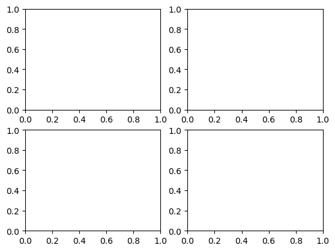
To plot data, we use ax.plot() or ax.scatter(). These methods are analogous to plt.plot() and plt.scatter() for acting on the Axes, rather than the Figure object.
# Plot data
ax1.plot(x, y)
ax2.plot(x, y)
ax3.plot(x, y)
ax4.plot(x, y)▶️ <b> Run the cell below. </b># Initialize empty figure
fig = plt.figure()
# Add four axes
ax1 = fig.add_subplot(2,2,1)
ax2 = fig.add_subplot(2,2,2)
ax3 = fig.add_subplot(2,2,3)
ax4 = fig.add_subplot(2,2,4)
# Plot data
# Plot sine wave with different colors on different axes
ax1.plot(x, np.sin(x - 0), color='darkblue')
ax2.plot(x, np.sin(x - 1), color='m')
ax3.plot(x, np.sin(x - 2), color=(0.0,0.8,0.81))
ax4.plot(x, np.sin(x - 4), color='#B8D62E')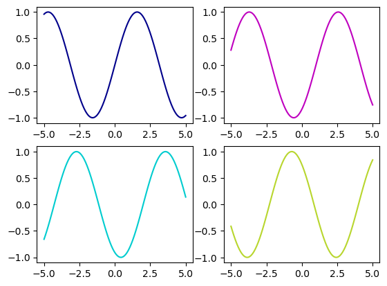
Figure vs. Axes methodsPerhaps the trickiest part about subplots – and Axes methods in general – is adjusting the axes settings. While most Figure functions translate directly Axes methods (e.g. plt.plot() \rightarrow ax.plot(), plt.legend() \rightarrow ax.legend()), commands to set limits, ticks, labels, and titles are slightly modified. Some important Figure methods and their Axes counterparts are shown in the table below.
| Figure command | Axes command |
|---|---|
| plt.xlabel() | ax.set_xlabel() |
| plt.ylabel() | ax.set_ylabel() |
| plt.xlim() | ax.set_xlim() |
| plt.ylim() | ax.set_ylim() |
| plt.xticks() | ax.set_xticks() |
| plt.yticks() | ax.set_yticks() |
These are different primarily because the Figure functions are inherited from MATLAB, while the Axes functions are object-oriented. Generally, the arguments are similar – if not identical – between the two.
▶️ <b> Run the cell below. </b># Initialize empty figure
fig = plt.figure()
# Add four axes
ax1 = fig.add_subplot(2,2,1)
ax2 = fig.add_subplot(2,2,2)
ax3 = fig.add_subplot(2,2,3)
ax4 = fig.add_subplot(2,2,4)
# Plot data
# Plot sine wave with different colors on different axes
ax1.plot(x, np.sin(x - 0), color='darkblue')
ax2.plot(x, np.sin(x - 1), color='m')
ax3.plot(x, np.sin(x - 2), color=(0.0,0.8,0.81))
ax4.plot(x, np.sin(x - 4), color='#B8D62E')
# Set axes limits, labels, + ticks
for i,ax in enumerate([ax1,ax2,ax3,ax4]):
# Set x limits
ax.set_xlim(-5,5)
# Set title
ax.set_title(r'$\sin{(x - %d)}$' % i)
# Only label x ticks and x-axis on bottom row
if i < 2:
ax.set_xticklabels([])
else:
ax.set_xlabel('x')
# Only label y ticks and y-axis on left column
if i == 0 or i == 2:
ax.set_ylabel('y')
else:
ax.set_yticklabels([])
plt.tight_layout()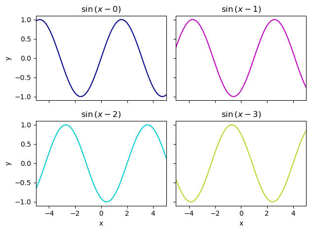
In the last example, we included a command, plt.tight_layout(), which automatically formats the figure to fit the window. This is most useful when using an IDE with a separate plotting window, rather than with in-line plots like those in a notebook. To get a sense of what plt.tight_layout() does, try re-running the above cell with this command commented out.
To go beyond regularly gridded subplots and create subplots that span multiple rows and/or columns, check out GridSpec.
As we learned in the previous exercise, working with real-world data usually complicates things, and plotting is no exception. In particular, working with time series can get a bit messy. Let’s take a look at our BSRN data as an example.
▶️ <b> Run the cell below. </b># Import data
bsrn = pd.read_csv('../data/BSRN_GOB_2019-10.csv',index_col=0,parse_dates=True)Now that we’ve imported our data, let’s make a quick plot of incoming shortwave radiation over time.
▶️ <b> Run the cell below. </b># Initialize empty figure
fig = plt.figure()
# Plot incoming SW radiation
plt.plot(bsrn.index,bsrn.SWD_Wm2)
# Label y-axis
plt.ylabel(r'Incoming SW radiation (W m$^{-2}$)')Text(0, 0.5, 'Incoming SW radiation (W m$^{-2}$)')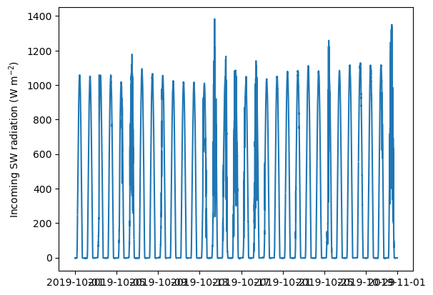
The x-axis looks rather messy because the tick labels are timestamps, which are, by nature, very long. Luckily, matplotlib has a module called dates for dealing with datetime objects.
▶️ <b> Run the cell below. </b>import matplotlib.dates as mdatesWithout going into too much detail, we can use some of the more advanced Axes settings to format and rotate the tick labels such that they no longer overlap, and we can use matplotlib.dates to format the timestamps. In short, we will use the mdates.DateFormatter() function to format the timestamps according to C formatting codes.
The following example demonstrates this, and includes a good code chunk for formatting timestamps to add to your repertoire. It is important to note that the formatting methods employed here are Axes methods, which means that we must operate on an Axes object, rather than the Figure.
▶️ <b> Run the cell below. </b># Initialize empty figure and axes
fig = plt.figure()
ax = fig.add_subplot(1,1,1)
# Plot incoming SW radiation
ax.plot(bsrn.index,bsrn.SWD_Wm2)
# Label y-axis
ax.set_ylabel(r'Incoming SW radiation (W m$^{-2}$)')
# Format timestamps
ax.xaxis.set_major_formatter(mdates.DateFormatter('%d-%b-%y'))
# Format and rotate ticks
plt.setp(ax.get_xticklabels(), rotation=45, fontsize=10, ha='right')
ax.get_xticklabels()[Text(18170.0, 0, '01-Oct-19'),
Text(18174.0, 0, '05-Oct-19'),
Text(18178.0, 0, '09-Oct-19'),
Text(18182.0, 0, '13-Oct-19'),
Text(18186.0, 0, '17-Oct-19'),
Text(18190.0, 0, '21-Oct-19'),
Text(18194.0, 0, '25-Oct-19'),
Text(18198.0, 0, '29-Oct-19'),
Text(18201.0, 0, '01-Nov-19')]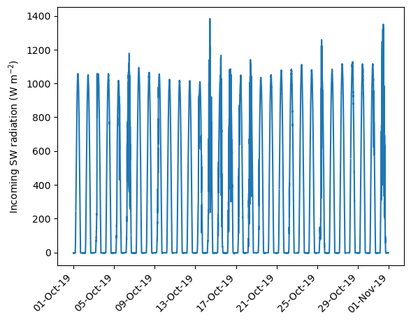